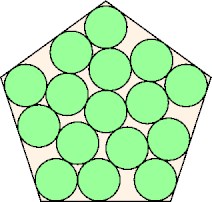

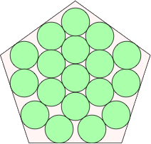
Found by George Sicherman
in July 2012.
Found by David W. Cantrell
in July 2012.
Found by David W. Cantrell
in July 2012.
| 1.
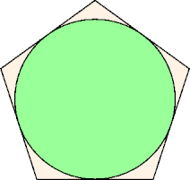 | 2.
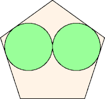 | 3.
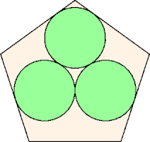 | ||
| s = 2tan(36°) s = 1.453+ Trivial. | s = 2tan(36°) + √5 - 1 s = 2.689+ Trivial. | s = 3.015+ Found by George Sicherman in July 2012. |
| 4.
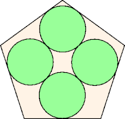 | 5.
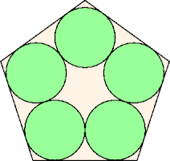 | 6.
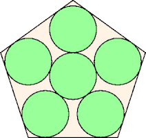 | ||
| s = 3.314+ Found by George Sicherman in July 2012. | s = 2tan(36°) + 2 s = 3.453+ Trivial. | s = 2tan(36°) + 4sin(36°) s = 3.804+ Trivial. |
| 7.
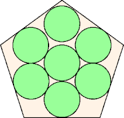 | 8.
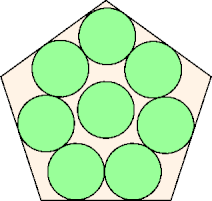 | 9.
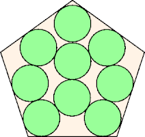 | ||
| s = 4.236+ Found by George Sicherman in July 2012. | s = 4.564+ Found by George Sicherman in July 2012. | s = 4.825+ Found by George Sicherman in July 2012. |
| 10.
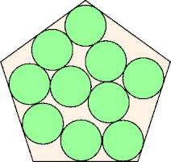 | 11.
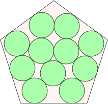 | 12.
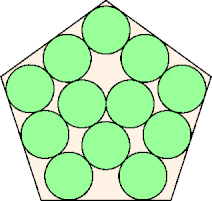 | ||
| s = 5.095+ Found by George Sicherman in July 2012. | s = 5.240+ Found by David W. Cantrell in July 2012. | s = 5.407+ Found by George Sicherman in July 2012. |
| 13.
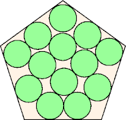 | 14.
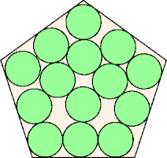 | 15.
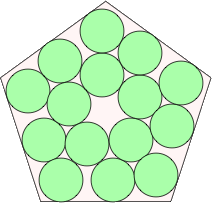 | ||
| s = 5.651+ Found by George Sicherman in July 2012. | s = 5.808+ Found by George Sicherman in July 2012. | s = 5.945+ Found by George Sicherman in July 2012. |
| 16.
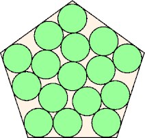 | 17.
| 18.
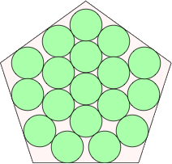 | ||
| s = 6.129+ Found by George Sicherman in July 2012. | s = 6.419+ Found by David W. Cantrell in July 2012. | s = 6.586+ Found by David W. Cantrell in July 2012. |
| 19.
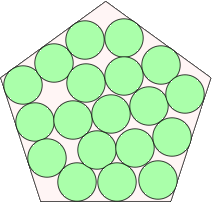 | 20.
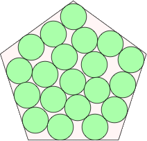 | 21.
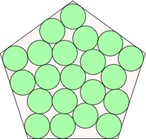 | ||
| s = 6.777+ Found by David W. Cantrell in July 2012. | s = 6.944+ Found by David W. Cantrell in July 2012. | s = 7.107+ Found by David W. Cantrell in July 2012. |
| 22.
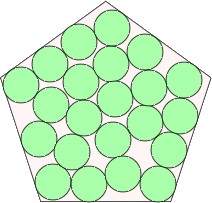 | 23.
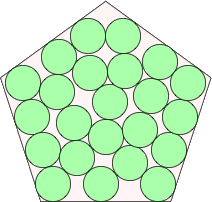 | 24.
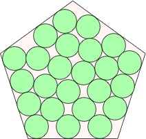 | ||
| s = 7.271+ Found by David W. Cantrell in July 2012. | s = 7.397+ Found by David W. Cantrell in July 2012. | s = 7.534+ Found by David W. Cantrell in July 2012. |